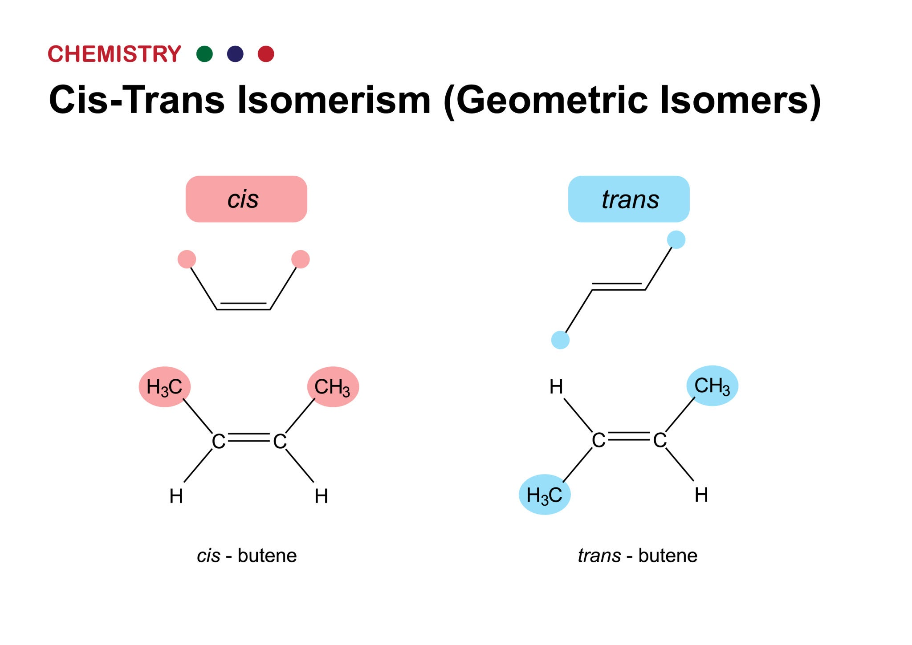
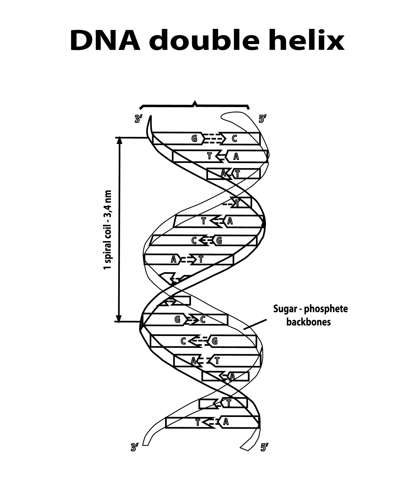
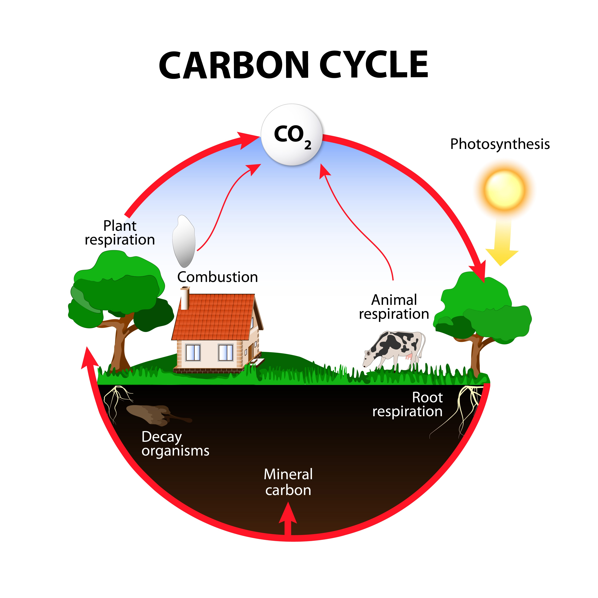

Section 1.4 – Carbon: The Foundation of Life
Introduction
All living organisms are made up of molecules that share a common, indispensable feature: they are based on **carbon atoms**. Carbon is often referred to as the “backbone of life” due to its unparalleled ability to form a vast diversity of stable, complex, and versatile molecules. The four major classes of macromolecules—**proteins, lipids, carbohydrates, and nucleic acids**—all owe their intricate structures and fundamental functions to the unique chemical properties of carbon. Understanding carbon’s atomic structure, bonding capabilities, and the molecular variety it enables is not just a matter of chemistry; it is crucial for appreciating how life can achieve both incredible complexity and remarkable stability at the molecular level, forming everything from the enzymes that drive metabolism to the genetic code that defines every living thing.
1. The Unique Properties of the Carbon Atom
1.1 Atomic Structure and Bonding
Carbon is element number 6 on the periodic table, possessing 6 protons, 6 neutrons, and 6 electrons. Its electron configuration is 1s² 2s² 2p², which reveals that it has **four valence electrons** in its outermost shell. This electron arrangement is the key to its versatility. Since a stable outer shell requires eight electrons, carbon can form up to **four strong, stable covalent bonds** with other atoms, allowing it to "share" electrons to achieve a full octet. This property of forming four bonds is known as **tetravalence**, and it is the single most important factor in making carbon the central element for life.
1.2 Tetravalence and Molecular Diversity
The tetravalence of carbon provides it with unmatched versatility. Unlike other elements that may form only one or two bonds, carbon can form up to four at a time, leading to an almost infinite variety of molecular structures. **Bonding Types:** Carbon can form single, double, or triple covalent bonds with other atoms. Single bonds allow for rotation, adding flexibility to a molecule, while double and triple bonds are rigid, locking the molecule into a specific shape. **Bonding Partners:** Carbon is highly sociable, bonding readily with a wide array of other elements essential to life, including hydrogen (H), oxygen (O), nitrogen (N), sulfur (S), and phosphorus (P), as well as with other carbon atoms. **Structural Forms:** Carbon-carbon bonding can produce long, unbranched chains (linear hydrocarbons), intricate branched chains, and stable ring structures. This ability to form intricate "skeletons" provides the foundational framework for all biological macromolecules. For example, the long hydrocarbon chains of fatty acids and the complex ring structures of steroids both rely on carbon's tetravalence.
1.3 Stability of Carbon Bonds
The covalent bonds formed by carbon are strong and stable, particularly the carbon-carbon bonds. This is vital for life, as the molecules that make up an organism must be robust enough to withstand the conditions of a cell and its environment. At the same time, these bonds are not so strong that they cannot be broken and rearranged by enzymes during biochemical reactions. This perfect balance between **stability and reactivity** makes carbon an ideal element for the dynamic and ever-changing chemistry of living systems.
2. The Diversity of Carbon-Based Structures
Carbon's ability to create diverse molecular shapes and arrangements is a cornerstone of biological complexity.
2.1 Hydrocarbons and Their Role
Hydrocarbons are the simplest organic molecules, composed solely of carbon and hydrogen atoms. They serve as an excellent illustration of carbon's ability to store energy. The nonpolar nature of the C-H bonds makes hydrocarbons **hydrophobic** (water-fearing), and they are a key component of lipids. For instance, the long hydrocarbon tails of fatty acids are the primary reason fats and oils are an efficient, high-energy storage medium for organisms.
2.2 Structural and Geometric Isomers
The spatial arrangement of atoms can have profound effects on a molecule's properties. Carbon-based molecules exhibit various forms of **isomerism**, where compounds have the same molecular formula but different structures. **Structural Isomers:** These compounds have the same atoms but a different covalent arrangement, such as butane and isobutane. The different arrangement of the carbon skeleton changes their physical and chemical properties. **Geometric (cis-trans) Isomers:** These isomers occur when there are double bonds that restrict rotation. The atoms on either side of the double bond can be arranged differently, resulting in distinct geometric shapes. This is critical in vision, where a single cis-trans isomerization of a molecule in the eye's retina triggers a neural signal.

2.3 Enantiomers (Mirror-Image Isomers)
Enantiomers are a special type of isomer that are non-superimposable mirror images of each other, like a left hand and a right hand. They arise when a carbon atom is bonded to four different groups, creating an **asymmetric carbon**. Enantiomers can have drastically different biological effects because enzymes and other biological receptors are highly specific and can only recognize one of the two mirror images. A classic example is the drug thalidomide; one enantiomer helps with morning sickness, while the other causes severe birth defects. Similarly, in Parkinson's treatment, only the L-dopa enantiomer is effective.
3. Functional Groups: The Active Chemical Components
While the carbon skeleton provides the basic framework of a molecule, its chemical properties are determined by **functional groups** attached to it. These groups, made of a specific cluster of atoms, act as the "reactive sites" of organic molecules, conferring polarity, reactivity, and solubility in water.
- **Hydroxyl Group (–OH):** Found in alcohols and sugars. It is polar, making molecules more soluble in water.
- **Carbonyl Group (C=O):** Found in sugars (as aldoses or ketoses) and is crucial for many metabolic reactions.
- **Carboxyl Group (–COOH):** A defining feature of organic acids, including fatty acids and amino acids. It can donate an H⁺ ion, making the molecule acidic.
- **Amino Group (–NH₂):** Found in amino acids. It can accept an H⁺ ion, acting as a base and neutralizing acids.
- **Sulfhydryl Group (–SH):** Found in the amino acid cysteine. It's vital for forming **disulfide bridges**, which are strong covalent bonds that stabilize the three-dimensional structure of many proteins.
- **Phosphate Group (–PO₄²⁻):** Found in ATP, DNA, and phospholipids. It carries a negative charge and is a key component for energy transfer.
- **Methyl Group (–CH₃):** A nonpolar group that can affect gene expression when added to DNA through a process called methylation.
The strategic placement of these functional groups on carbon skeletons is what generates the immense chemical diversity needed for life.
4. Carbon and the Four Macromolecules of Life
Carbon is the central component of all four major classes of biological macromolecules.
4.1 Carbohydrates
Composed of carbon, hydrogen, and oxygen, often in a 1:2:1 ratio. Carbon atoms form the backbone of sugar rings and chains, which are then linked together to form larger polymers like starch (energy storage in plants) and cellulose (structural support in plant cell walls).
4.2 Lipids
Primarily composed of long, nonpolar hydrocarbon chains. The carbon skeleton is what gives lipids their ability to store large amounts of energy and their hydrophobic nature, which is essential for forming the phospholipid bilayers of cell membranes.
4.3 Proteins
Built from amino acid monomers, each of which has a central **alpha carbon** atom bonded to an amino group, a carboxyl group, a hydrogen atom, and a variable "R" group. The carbon backbone of a polypeptide chain allows for the formation of the complex 3D shapes that define a protein's function.
4.4 Nucleic Acids
The information-carrying molecules of life (DNA and RNA). Their structural backbone is a chain of carbon-based sugar molecules (deoxyribose or ribose) linked by phosphate groups. The carbon atoms in the sugar rings serve as the attachment points for the nitrogenous bases (A, T, C, G, U) that encode genetic information.

5. Carbon in Metabolism and Ecosystems
Carbon is more than just a structural building block; it is the **central currency of energy and matter** within living systems. Its movement and transformation are what drive all biological activity, from the smallest cellular reactions to global ecological processes.
Catabolism and Anabolism: The Two Sides of Metabolism
Metabolism is the sum of all chemical reactions in an organism. It is fundamentally divided into two processes that manage carbon:
- **Catabolism:** This is the breakdown of complex carbon compounds into simpler ones. For example, in **cellular respiration**, cells break down glucose (C6H12O6) to release the stored chemical energy in its bonds. This energy is then captured in the form of ATP, which powers all cellular work. In this process, carbon atoms are released as carbon dioxide (CO2).
- **Anabolism:** This is the synthesis of complex molecules from simpler carbon-based building blocks. Cells use the energy from catabolism to build all the essential macromolecules they need, such as proteins, nucleic acids, and new cell structures.
The Global Carbon Cycle
On a grander scale, carbon atoms are continuously recycled through the **global carbon cycle**, moving between living organisms and the environment. This cycle is a fundamental process that sustains life on Earth.
- **Photosynthesis:** The cycle begins with **photosynthesis**, where plants and other photosynthetic organisms capture inorganic carbon from the atmosphere as carbon dioxide (CO2). They use solar energy to convert this CO2 into organic carbon compounds, such as glucose, storing energy in the process.
- 
- **Respiration and Decomposition:** Carbon is returned to the atmosphere through several key processes. **Cellular respiration** by all living organisms releases carbon back as CO2. When organisms die, **decomposers** (like bacteria and fungi) break down their organic matter, releasing the carbon atoms they contain back into the atmosphere or soil as CO2.
This continuous flow and recycling of carbon atoms between inorganic and organic forms is what maintains the balance of life and sustains all ecosystems.
6. Carbon's Role in the Origin and Evolution of Life
Carbon’s unique chemical properties are likely the primary reason why life on Earth is carbon-based. Its ability to form a vast number of stable molecules under a wide range of temperatures and conditions makes it the perfect candidate for the raw material of life. The earliest organic molecules, such as amino acids and nucleotides, were likely formed from simple carbon compounds under prebiotic conditions, providing the building blocks for the first living cells. The search for extraterrestrial life is almost universally focused on planets and moons that could support carbon-based chemistry because of its unparalleled versatility.
7. Summary: The Carbon Advantage
In essence, carbon’s position on the periodic table and its resulting chemistry grant it six key attributes that make it the **foundation of life**:
- **Tetravalence:** The ability to form four stable covalent bonds.
- **Versatility:** The capacity to form long chains, branches, and rings.
- **Stability:** Carbon-carbon bonds are strong enough to form stable molecules.
- **Isomerism:** The creation of molecular diversity from a single chemical formula.
- **Functional Groups:** The ability to carry active chemical groups that determine a molecule’s function.
- **Central Role:** Carbon is the fundamental element of all four biological macromolecules, metabolism, and the global carbon cycle.